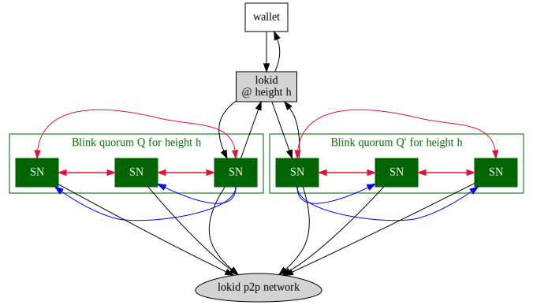
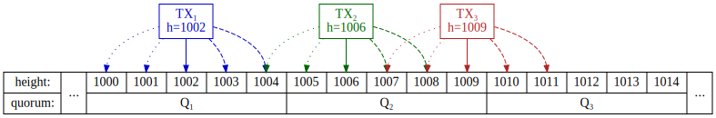
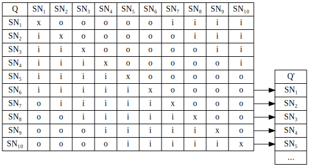
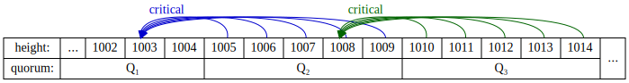

Loki Blink Design¶
Metadata¶
LIP Number: LIP-4
Title: Loki Blink [No Vote]
Author: Jason Rhinelander (@jagerman) jason@loki.network
Status: Draft
Type: Core
Created: 2019-06-06
Requires: LIP-3 (checkpointing)
Source: LIP 4
Version history¶
- v0.9
- Initial public draft.
1. Summary¶
Blink is Loki’s instant payment mechanism proposed in the original Loki whitepaper. Once completed, Blink will allow users to send payments instantly to each other and allow instantly resend of received Blink transactions without requiring blockchain confirmations.
This document is intended to serve as a whitepaper underlying the concrete design for the implementation of Loki Blink with an expectation of inclusion in the 5.0.0 release.
2. Abstract¶
Blink takes advantage of Loki’s service node layer and checkpointing mechanism to provide a strong assurance that a transaction will eventually reach the blockchain without risk of various adversarial attacks cancelling the transaction. It does this by using multiple quorums to validate a transfer and block conflicting transfers. This validation in combination with checkpointing and updated blockchain consensus rules help ensure that such validated transfers have a strong assurance of reaching the transaction memory pool and thus can be relied upon without requiring mining confirmations.
3. Blink from the user perspective¶
3.1. Wallet side¶
From the user (wallet) side, initiating a Blink transfer is nearly identical to initiating a normal transfer, but with an extra flag (e.g. GUI checkbox, RPC parameter, CLI option) to say “Blink this transaction!”.
The fees of the blink transaction are higher as it involves considerably more work for the network: service nodes must validate the transaction, and all nodes must perform extra validation steps and require some temporary extra storage to store recent Blink transaction details.
For the user receiving a blink transaction, the wallet will see the received amount virtually instantly (that is, as soon as it is received by the lokid and the wallet refreshes with the daemon). Moreover these funds will be instantly spendable: unlike a regular transaction there will be no lock on the received funds before they can be spent again. The wallet user can immediately re-Blink the funds to someone else, or can send off a regular (non-Blink) transaction that spends the received Blink outputs instantly without needing to wait for the Blink transaction to be mined into a block.
3.2. Re-blinking¶
One of the goals of Blink is the ability to “re-Blink”: That is, we want a Blink transaction to be instantly available to the recipient indistinguishable from a (confirmed) non-Blink transaction from a usability perspective. For example, when Ava blinks 10 LOKI to Betty then that transaction is initially still in the mempool, but we don’t want Betty to have to worry about this technical detail: instead Betty can instantly Blink it to someone else, send a regular transaction, or use it to stake a new service node without waiting for even a single confirmation.
3.3. Fees¶
The precise fee schedule is yet to be determined, but will be an additional amount on top of the current transaction fee, most likely calculated as a multiple of the transaction fee. Additionally, Blink transactions will not have a choice in transaction priority: since they are instantly spendable and guaranteed by the network, there would be little point in a user ever choosing anything higher than the minimum. Thus, for now, we mandate that Blink fees must always be submitted with a “normal” priority transaction fee (but this is tentative and may be adjust this before final Blink release).
The extra Blink fee doesn’t go to anyone: rather it gets permanently destroyed as part of the transaction. We considered two alternatives here:
- Collecting fees and redistributing to SN over time. This would involve temporarily burning Blink fees, but keeping track of how much had been burned and continually reemitting them over a period of time as an extra rewards to Service Nodes. (For example: in every block, reduce the current pool of burned fees by 0.1% and reemit it to the service nodes that earn a reward in that block).
- Just burning fees.
Ultimately we decided on the second approach because:
- It is much simpler.
- It is more predictable: SN rewards (for a stable number of service nodes) are known precisely.
- In the end, the two approaches are effectively equivalent in terms of total emission.
By equivalent I am assuming that we have a specific net emission target. For simplicity, I’ll just talk about the long-term 28 LOKI/block emissions, and, for the sake of example, assume that it is divided up so that service nodes get 20 LOKI/block of that;[1] the remaining 8 is foundation and miner coinbase rewards. What I mean by net emission is that if we have an average burning of 5 LOKI/block in Blink fees, then the net emission would 23 LOKI/block. But let’s suppose that 25 LOKI/block is our actual desired long-run emission target.
With method 1, we’re emitting 28 LOKI/block: burned Blink fees are reemitted over time and so, much like regular tx fees, there is no net gain or loss. To hit the 25 LOKI/block target we’d have to adjust the formula to reduce emissions to 25 LOKI/block.
With method 2, where we are burning 5 LOKI/block in fees, we are generate net emissions of 23 LOKI/block; to hit the same 25 LOKI/block target, then, we would need to increase coinbase emissions by 2 LOKI/block to hit our target.
Either way we arrive at the same place: net emissions of 25 LOKI/block through adjustment of the emission schedule. This was just an example, of course; our actual target could be 20 or 28 or 12 or whatever else. But with method 2, service nodes always know exactly what they will earn, while with method 1 there is more variability: large, sustained differences in the volume of Blink transactions will affect SN profitability, while in method 2 such differences will affect the overall coin emission but not the amount earned by a service node.
Thus, given the simpler approach and essential equivalence between the two approaches, we decided to pursue method 2. (Of course, like anything in Loki, we can always change the design later given compelling reasons to do so!)
4. Technical design¶
4.1. Transaction overview¶
In a nutshell (with most of the details covered later in this document): The wallet builds a transaction and sends it to the lokid to be blinked. The lokid then looks up the Blink quorum, connects to a few nodes in this quorum, sending the transaction to them to be signed. The quorum distributes the transaction within itself, and once enough approval signatures are collected, broadcasts the transaction and signature data to the service node’s p2p peers to disseminate it across the network. The lokid talking to the quorum then receives a confirmation message (with signatures) to relay to the wallet.
These steps are depicted in Figure 1. Note that the diagram has been significantly simplified for illustration to show only three service nodes per quorum rather than the actual ten.

In more detail:
-
The wallet constructs a transaction. This transaction is almost like a regular transaction except that it leaves enough inputs unspent to cover both the required mining transaction fee and the Blink fee. This transaction gets send to the wallet’s lokid for handling.
-
lokid looks at the transaction, does some preliminary checks (as it would with any transaction) and additional checks related to the Blink transaction (such as having the correct transaction priority and blink fee). These checks are not strictly required for network security—they will also be done by the service nodes — but can give an immediate failure response to the wallet if the node reasonably believes the transaction will fail. Assuming the preliminary checks pass, the node then uses the current blockchain height to determine the transaction’s signing height, h. This h value then determines two current Blink quorums, Q and Q’ (more details on quorum construction are in the Quorum selection section below). The lokid handling the transaction connects directly to 2 nodes selected randomly from each quorum and sends the transaction (plus other required details such as h) to be signed.
-
The receiving quorum nodes directly contacted by the initiating lokid forward the transaction details to the other quorum nodes for verification.
-
Each service node in the two quorums performs checks on the validity of the transaction, such as ensuring that it isn’t already spent, that it isn’t already in the mempool, that miner and Blink fees are correctly specified, and that the requested signature height, h, h is approximately current (within 2 blocks of what the service node believes is the current height), and that the key images have not been already locked out by a previous, different Blink transaction signing. Assuming everything checks out, the service node records the transaction’s key images locally (to lock them out from being signed again by this service node), signs the transaction hash with the service node private key, and sends the signature to the other quorum members.
-
As each of the quorum members receives a supermajority of valid signatures (i.e. 7 in total) from both quorums it immediately sends out the transaction and signature details to its blockchain peers via its p2p network. If the quorum node in question is one of the nodes that was directly contacted by lokid, it additionally communicates the success back to the caller.
These signed mempool transactions, however, are much stronger than a regular mempool transaction in that they can trigger a reorg or lead to rejected blocks: more details on this are covered below.
In the case of detectable failure (for example, from a detected double-spend confirmed by a sufficient number of service nodes), a failure message is returned to the caller. If a failure is caused by too many quorum nodes timing out the caller is expected to itself timeout after an appropriate amount of time waiting for a response.
-
The initiating lokid waits for success, failure, or timeout from the quorum nodes it contacted, and once received (or timed out), sends this information back to the wallet.
4.2. Quorum selection¶
Quorum selection works by using the requested signing height h to deterministically select the two relevant quorums, Q and Q’. A quorum Q is determined by the 5-block range within which h falls, and Q’ is the quorum for the immediately subsequent 5-block range. For example, any h value in 1000–1004 will yield the same Q and Q’ quorums, and this Q’ will be exactly the same quorum as the Q quorum for an h value in the 1005–1009 signing height range. In other words, Q’(h=1003) and Q(h=1006) are the same quorum.
All service nodes in Q and Q’ refuse to sign a transaction with a requested signing height h that is more than 2 blocks behind or ahead of the service node’s current blockchain height: this is to allow some tolerance for Blink transactions to succeed even if new blocks are propagating through the network during the Blink transaction signing process. This ±2 tolerance is designed to make the user experience better: using a node that is slightly out of sync[2] will still work fine rather than returning a Blink failure. It also avoids potential Blink failures on the part of quorum nodes: if a block happens to arrive during the actual signing process such that half of the quorum see the new block and half see the old block the quorum will still sign without issue. On the other hand the ±2 limit on the signing height also prevents abuse: the larger the allowed range, the more choices a malicious actor would have to pick and choose a “friendly” quorum.
The quorum sample itself needs to be effectively immutable, and so we propose a deterministic random sampling using a MT19937-64 random number generator seeded with the block hash 35 blocks before the first valid quorum height, h₀. Thus quorum Q for height 1002 is determined by block 965 (35 blocks before the first signing height of the quorum, h₀=1000), and quorum Q’ is determined by block 970 (35 blocks before the first height of the second quorum, h’₀=1005). Moreover the sampling algorithm excludes any service nodes that are scheduled to expire before block h₀+10.
For validation of a Blink transaction we require a supermajority of signatures from both quorums. The point here of using the two quorums is to prevent a timing conflict where, if we had just one quorum per block (or range of blocks), then one Blink transaction could be signed by quorum Q₁ and another transaction spending the same keys could be signed by quorum Q₂ before the first transaction is broadcast to the network. By using two overlapping quorums we end up with the key images in question being locked both in the current quorum but also in the following quorum (which could come as early as the next block). Even if the next Blink transaction switches to a new quorum, the overlap ensures that it simply switching to a quorum that has already locked any key images of Blink transactions submitted in the last few blocks.
4.2.1. Overlapping quorums rationale¶
There are three reasons for using these two overlapping quorums. First, we want the quorum signature process to “reach” a few blocks into the future (5–9 blocks ahead with 5-block quorums) to give enough time for the quorum signatures to disseminate across the network. While 5 blocks is more than would be typically required, there are some edge cases discussed in detail below that can lower this future block interval to just 2 blocks.
Second, Blink processing is expected to require a substantial number of connections between service nodes; with 5-block quorums we can at least reduce the frequency with which connections need to be established as service nodes will keep their connections open for the duration of the quorum.
Third, using two quorums offers considerable higher security than one quorum of twice the size for two reasons. First, each quorum is essentially a new random draw of service nodes; that means the more quorums you have over a given period of time the more random draws you do, and with more draws you get more “chances” to pick a compromised sample. Second, two consecutive supermajorities of quorums of half the size is considerably more secure than one supermajority of a quorum twice the size.
Some numbers can help demonstrate this: suppose the network has 1000 service nodes, and a single malicious actor is in control of 25% of those service nodes. Under alternative A, we require the majority of a single quorum of 20 service nodes, and require a 70% of the service nodes’ signatures. Under alternative B, we require two quorums of 10 service nodes each, again requiring 70% signatures from each quorum.
Under scenario A in any given quorum the actor has a probability of 0.00000381 of having the required 70% majority. Under scenario B, the actor has a probability of 0.000000173: that is, under scenario A, the actor is about 22 times more likely to obtain control of any random quorum than any random quorum pair. Or to put it into context: in a one year span, there’s about an 18% chance that this bad actor would gain quorum control for at least a single quorum under scenario A, and about a 0.9% chance that he would under scenario B. As for quorum length, if quorums lasted for one block instead of five there would be a 4.4% chance of this 25% operator having a quorum supermajority at least once under the overlapping quorum design, and a 63% chance under the single quorum design.
If this adversary actually controlled an incredible 50% of the service node network it would be quite difficult to avoid a compromise: he would have quorum supermajority votes about 2% of the time under the single quorum approach, and 0.3% of the time under the overlapping quorum approach. Such an adversary would have a 95% chance of quorum ownership at least once per day with a quorum of 20, and a 35% chance per day with overlapping quorums.
It is worth pointing out, in passing, that these probabilities are countered by the economic design of Loki: even if such adversaries existed, they would have a strong financial incentive to ensure that the network is not compromised as such a compromise would likely have a significant negative impact on their own holdings, which are heavily invested and locked into service node stakes.
There is, of course, some desirable statistical properties of making a quorum longer: if quorums changed on a 10 block cycle you’d cut the probability of compromise by nearly half (to 0.45% in the overlapping case). This gain isn’t huge, though; moreover the longer the quorum becomes the more complications can arise from service node deregistrations, and the more time you allow for coordination between service node operators looking to cheat the system.
Instead, if we wanted to further increase the security of Blink transactions, a preferable approach would be to use a triple quorum. It could also be possible to enable an opt-in triple quorum, at a higher fee, to allow users to send with a paranoid level of assurance. (This is now, however, part of the current Blink plan.)
4.2.2. Quorum selection block and checkpointing rationale¶
Using a lag of 30 blocks for quorum determination was chosen to interact with Loki checkpointing. Unlike checkpointing and deregistration quorums, a change in Blink quorums would be highly undesirable as the validity of the Blink signature would no longer hold. Thus we want to use a height from the blockchain that is sufficiently far back as to be highly likely to be made immutable via checkpointing. By basing the quorum on h₀-30 we give ample time for checkpointing even if 2-3 checkpoints have been missed.
For example, if blinking at height 1000 then Q’ begins at 1005, which means the relevant block for determination of Q’ is 975. Checkpointing normally occurs every 4 blocks with immutability occurring after 3 checkpoints. Thus in typical times it can be up to 4 blocks since the last checkpoint quorum, which itself establishes a checkpoint on a block 4 blocks earlier. Allowing up to 2 blocks for the quorum to vote and disseminate the checkpoint to the network this means the first checkpoint is usually between 4 and 10 blocks ago, the second is 8-14 blocks ago, and the third, immutable checkpoint is 12-18 blocks ago. If one of these checkpoints were missed (for example because of a quorum failure) then the immutable checkpoint could be 16-22 blocks ago; and if three were missed, up to 30 blocks ago. Thus the h₀-35 rule establishes that both quorum selections are established by a block at least 30 blocks in the past, which allows Blink to tolerate up to 3 missing checkpoints.
To further secure Blink transactions we further require that the quorum seed heights are checkpoint-immutable: both the initiating lokid and the quorum service nodes will verify that the quorum seed height is in fact checkpointed, refusing to sign (and thus failing the Blink if enough fail to see the required checkpoints) if it is not. This ensures that Blink transactions are secure by preferring to fail a Blink signature rather than include one that has any chance of being invalidated by a block reorganization.
4.3. Quorum validation¶
Some potential cases are depicted below:

4.3.1. TX example one¶
TX₁ is depicting a transaction submitted to a daemon which sees the current height of the network at 1002.
We can think about a few different cases:
-
Submitting the blink transaction normally at the known height (1002). Thus we get Q = Q₁ and Q’ = Q₂ for the two quorums. The initiating lokid contacts a random service node q from Q₁, passes along the transaction, and waits for a reply from q. q in turn communicates with its quorum peers and the subsequent quorum (Q₂) to build the required set of signatures. Once the required signatures are accumulated the transaction is released by the quorum service nodes to their peers.
The Blink TX is broadcast to the network. Because a majority of Q₂ service nodes signed it and will not resign the same key images, the earliest possible Blink height to spend the same key images is 1010, which can be used by a cheating lokid at network block 1008 at the earliest.
-
Submitting slightly behind the network (1000 or 1001). This could happen, for instance, because there have been two recent blocks that the local lokid has not synchronized yet. Generally everything here works as above: the service nodes at height 1002 will still sign the block (assuming the transaction itself is valid) because the requested signature height is within 2 of their current height.
-
Submitting slightly ahead of the network (1003 or 1004). This could happen, for instance, if the local node is close to a very lucky pool that has just discovered a couple blocks that haven’t disseminated across the network yet. Again, this is handled just like the above: even though the service nodes haven’t yet seen a block newer than 1002 it still satisfies the within-2 rule and so they will still sign (assuming the transaction is valid).
-
Submitting well behind or well ahead of the network (999 or lower, or 1005 or higher). In this case the quorum will not accumulate enough signatures because the within-2 requirement is violated. In this case a failure gets returned to the initiating lokid.[3]
The first three (accepted) cases above all result in the earliest block a cheater could submit to being 1008 (i.e. abusing the within-2 rule to submit a h=1010 block), giving a worst case of at least 4 blocks needing to be transmitted to the network before a duplicate Blink could be submitted; since Blink dissemination is high-priority this should result in a high level of assuredness that a Blink double-spend cannot be performed in this scenario.
4.3.2. TX example two¶
TX₂ in Figure 2 shows a transaction that is sent via a lokid that sees the current h=1006, i.e. in the second block of quorum Q₂. I’ll just ignore the h>1008 and h\<1004 cases (see above for why they are dead ends).
-
Case 1: Submitting h=1005, 1006, 1007, 1008. This case is largely the same as TX₁, but now the two quorums are Q₂ and Q₃. The earlier a theoretical double-spending Blink could be submitted is with h=1015 at actual height 1013: that is, a minimum of 5 network blocks away.
-
Case 2: Submitting h=1004 (either due to a lagging node, or a malicious actor). This ends up using the same quorums as TX₁ (that is, Q₁ and Q₂). As in TX₁, the earliest possible double spend could be submitted at 1008.
Case 2 here represents the worst possible scenario: there are just two network blocks between the current height (1006) and the height at which a blink transaction could be submitted to a completely independent quorum pair. There is a potential issue here from an attacker, discussed in further detail below.
4.3.3. TX example three¶
TX₃ is included for completeness to show that cheating ahead by a quorum has no advantage for a potential attacker. This depicts the sending transaction at h=1009. The attack essentially has two relevant choices: h=1007–1009, or h=1010,1011. In the first case, he gets quorums Q₂ and Q₃, making his earlier possible Blink double-spend at h=1015 (submitted at h=1013), which is
Stats geek note: the probability of being 3+ blocks behind the network with lag L seconds is the CDF value of a Poisson distribution with λ=L/120 at k=3.
4.4. Repeated signing of the same transaction¶
One possible Blink failure mode is that the requested signature height, h, is seen as too old (or even too new) by some or all members of the service node quorum if it does not fit within their ±2 tolerance. This could be caused, for example, by the lokid the wallet is talking to being out of sync. In the case of such a failure, the calling lokid could check for new blocks and, if changed, resubmit the transaction for signing at an updated signing height h. We want this resubmission to succeed even if it goes to the same quorum, as it makes the Blink process more robust to network synchronization issues.
This means, in particular, that service nodes will need to add an exception to the normal key image blacklisting if asked to re-sign the exact same transaction for which the key images were blacklisted.
4.5. Signature failure: key images may stay unblinkable (for up to 10 blocks).¶
When a service node signs a transaction as part of a given quorum it will never sign a different transaction containing any of the same key images again as part of that quorum. Since failures are possible for multiple reasons, however, it does not block the key images of a transaction that it refused to sign.
It is possible, however, for a transaction to fail to be signed by a supermajority while still being signed by a superminority (that is, by enough other nodes to prevent a supermajority). This case is expected to be rare: the criteria for service node disagreement is small: effectively you would need (roughly) half of the service nodes to see something wrong with the transaction. It is not impossible, however: if a regular transaction spending the same key images is mined and the block transmitted in the middle of signing the blink could fail.
The user-facing problem that could arise here is that the transaction that gets signed includes multiple key images, only some of which are ineligible. The service nodes that signed the transaction, however, end up locking all of the key images for the duration of the quorum ( i.e. the next 4–9 blocks), so even once the user wallet sees the updated chain a new transaction might end up trying to blink using an input that is temporarily non-blinkable (note that it will still be regularly minable since the Blink was not transmitted due to the quorum failure).
This case seems rare: it would require a legitimate user spending regular transactions and blinking at the same time from different wallets. It’s possible, of course, but given the rarity and the relatively minor consequence (not being able to Blink those outputs for 10–20 minutes) for now we will simple leave this as a known limitation.
4.6. Blink transactions entering the mempool¶
Blink transactions themselves are perfectly ordinary transactions on the blockchain: the signatures applied by service nodes do not end up as part of the transaction that gets mined into the chain. Instead this metadata is shared and synchronized between nodes from the time when a Blink transaction enters the mempool until the transaction is mined and secured behind an immutable Loki checkpoint boundary.
An incoming Blink transaction in the mempool will also be transmitted with the Blink height and the verifiable Blink signatures at which the transaction was signed. Based on this, a loki node receiving a blink transaction will perform multiple actions:
- Verify that the Blink signatures are the correct signers for the given height, and that the signatures are valid (and if not reject the Blink transaction).
- Check to see if any of the key images were spent in or before the last irreversible checkpoint block: if so, reject the Blink transaction.
- Check to see if the mempool already contains any Blink transactions that have a higher priority (i.e. lower height) than the incoming transactions, and if so, refuse the incoming transactions. (This shouldn’t be possible, but is included as a safeguard to maintain consensus).
- Check the current chain back to the last irreversible checkpoint: if any blocks contain any transactions that spend any of the key images in the new Blink transaction then roll back the chain as much as needed to remove those transactions from the blockchain, re-adding any rolled back transactions into the mempool (as occurs already with any reorg).
- Reject any non-Blink transaction from the mempool that spend the same key images as the new Blink transaction (if we just rolled back then this means immediately rejecting the conflicting transactions).
- Reject any Blink transactions from the mempool that spend the same key images but have a lower priority (i.e. higher height) than the new Blink transaction. This should not be possible in general, but needs to be specified anyway to avoid a consensus failure (as with the mirrored check above). Note that this actual removal could cascade if there are other transactions referencing the removed Blink transaction.
Another difference with Blink transactions is that they should not be subject to the existing 2-week mempool transaction timeout. We don’t want someone to be able to submit a low-priority Blink transaction while the network is flooded with higher priority transactions and be able to wait out the transaction until timeout. As long as Blink transactions stay in the mempool until mined all an attacker can do is delay the transaction from being mined, but cannot cause it to be dropped no matter how long he prevents mining. In the unlikely event of a bug that makes a Blink transaction inadmissible to the blockchain for some unforeseen reason, this approach will keep the transaction alive indefinitely until the bug can be addressed.[4]
Second, Blink transactions need to be more actively propagated across the network than current transactions. Currently the mempool is not actively synchronized across nodes; instead new transactions are simply broadcast to all connected peers when received. A new node, a node that was temporarily down when the transaction propagated across the network, or a node that has had its mempool manually flushed does not receive existing mempool transactions from peers if it misses it the first time. This needs to change for Blink transactions: when a p2p connection is established we need each peer to send the other a list of any pending Blink transaction details it doesn’t already have. Effectively we need Blink transactions in the mempool to become first-class synchronization objects, just like blocks.
Finally, synchronized Blink transactions may not be (and do not need to be) identical across the network in terms of attached quorum signatures: it is entirely possible for two nodes to receive a different set of 14 signatures: so long as all are valid for the quorum
4.7. Blink transactions entering the blockchain¶
A transaction entering the blockchain from the mempool requires two changes: first, the Blink transaction’s unspent amount now includes both the tx fee, as before, but now also the Blink fee. Second, because transactions can reference other Blink transactions currently in the mempool this puts an ordering on transactions: if A includes B in its ring signatures (whether as the actual key image or a decoy) then there is an implied ordering for mined block selection: A cannot be included in a block before the block in which B is included. This requires, of course, changes to the transaction selection algorithm used to construct block templates for miners.
4.8. Re-Blinking implementation¶
As discussed in Re-blinking we need received Blink funds to be instantly spendable. That means that the recipient’s wallet needs to recognize that those received funds are immediately spendable, whether in a new non-Blink transaction or in a new Blink transaction. In either case this means the new transaction will spend outputs that aren’t yet on the chain, but are still in pending Blink transactions in the mempool. We need to update lokid and the wallet allow this.
This does, however, raise another important issue, addressed in the next section.
4.9. Ring signature implications¶
The anonymity in Loki depends on the actual and decoy outputs being included in the transaction ring signature being indistinguishable. Quick turn-around re-blinking breaks that with the current ring signature selection in two ways:
First, a Blink transaction that enters the mempool that includes a mempool Blink transaction in its ring signature provides a perfect link between the transactions because currently only blockchain transactions but not mempool transactions are ever included in a ring signature.
Even if you don’t have the mempool history you can still infer likely links between Blink transactions that are very close together (i.e. within a small number of blocks). As outputs in the same block (or within a couple blocks) are highly unlikely to occur naturally, seeing such transactions in the mempool give a high probability that the transactions are linked.[5]
To get around this problem, we will need to update the ring signature construction to be able to select from both existing blockchain transactions and Blink transactions in the mempool for both Blink transactions and regular transactions. (This of course imposes additional mempool ordering constraints to those discussed in the blockchain section as ordering also applies to non-Blink transactions using mempool decoys.) Further investigation will be needed to determine a good selection probability (and will likely need tweaking in future releases), but we will aim to be on the side of having too high a probability: using too low a probability is much worse as it would make Blink transactions still stand out (albeit imperfectly).
Potentially including mempool Blink transactions in normal transaction ring signatures is important as well: because a Blink transaction is instantly spendable, a non-Blink transaction including a recent Blink transaction would similarly link the outputs together. Thus we potentially include Blink dummy transactions in all transactions (which has the separate advantage of simplifying the code: building a Blink transaction and building a regular transaction will be identical).
4.10. Blink and checkpoints¶
Blink transaction metadata (i.e. quorum signatures, signing height) is meant to be temporary data that only needs to be kept until the transaction is unequivocally committed to the blockchain. Thus Blink is designed to work with Loki’s checkpointing feature: once the transaction has passed the point where it is not reversible—that is, once it has been signed by three checkpoint quorums—service nodes can discard the metadata.
4.11. Quorum communication¶
Current quorum communication (e.g. for deregistration voting or for the upcoming checkpointing support) relies on a gossip protocol to carry messages over the loki p2p layer. While this is manageable for those applications it is not going to be sufficiently scalable for Blink quorum voting.
Instead part of the Blink development will be to build a direct communication layer where service nodes connect directly to one another for quorum purposes. The initial plan is for quorum SNs to communicate directly with each (using the SN public IP being added in #622). This communication layer will also be designed to handle quorum traffic for service node deregistration and allow faster and more efficient communication in those scenarios as well.
The specific implementation details will be developed further during the Blink implementation; the current plan is to create a relatively simple SN-to-SN protocol using ZMQ (which is already a loki core dependency) over which quorum members communicate, and over which the initiating lokid contacts quorum service nodes to begin the Blink signing process. The initial approach here is to use a fully-connected quorum: 9 open connections, roughly half inbound and half outbound, for each SN, held open (and reestablished upon disconnection) for the duration of the Blink quorum validity.
As a simple fully connected approach, the following table shows node-to-node connections within a quorum:

where “o” indicates that the row node establishes an outgoing connection to the column node and “i” indicates that the row node receives an incoming connection from the column node. Additionally once the depicted quorum Q becomes the first quorum, nodes 6–10 establish outgoing connections to nodes 1–5 of following quorum, Q’. (Similarly, but not depicted, when Q is the second quorum there will be inbound connections to SN₁ through SN₅ from the previous quorum’s last 5 nodes): first node in the quorum will open connections to nodes 2–6, the second node will open to nodes 3–7, and so on. The sixth node will open connections to nodes 7–10, the seventh node to 8–10 and 1, and so on. Additionally, once a quorum becomes the first quorum, nodes 6–10 each establish a connection to nodes 1–5 in the second quorum.
This is designed to be balanced: each service node establishes outgoing connections to exactly 5 other service nodes, and is connected to by a (different) 5 service nodes. Each of these
Additionally, each quorum would have some nodes that establish a connection to some of the nodes in the following quorum over which messages will be passed when a quorum has acquired the required supermajority of signatures.
4.12. Service node deregistrations¶
As discussed in the Quorum Selection section, the service nodes that make up a quorum are chosen by excluding service nodes that have (or will) expire before the quorum completes its tasks. A related problem, however, is that there are unforseeable deregistrations that may occur (or may have already occurred) since the seed height.
This is partially addressed by the quorum tolerance: since a quorum required only 7 of 10 votes, it can continue to function even if 3 nodes deregister. It is, however, possible (albeit extremely unlikely) that 4 or more nodes have been deregistered from the network in either quorum, either before the quorum begins or during the quorum validity period. If this occurs, a quorum member must simply refuse to sign. This can also be checked by the initiating lokid: if it fails to build a quorum of at least 7 active nodes in each quorum it can immediately return an error to the initiating wallet that the Blink service is temporarily down.
The reason that we cannot add “substitute” nodes in the event of deregistrations is that it would affect the validity of quorum signatures if a blockchain reorganization should happen: such a reorganization could delay the deregistration to the point that the substitute isn’t actually valid anymore, thereby invalidating the Blink signature.
It is tempting to at least consider substitutions for deregistrations that are past an immutable checkpoint boundary, but again this would not work: though checkpoints are distributed across the network, they are a moving target that is external to the blockchain itself. Thus determining the correct set of quorum signatures would change as checkpoints propagate the network and so verification of having the correct set of signatures would be impossible.
We believe that the 7 of 10 threshold, allowing for up to three failures (including deregistrations) should be sufficient to keep Blink operational in all but extreme circumstances (such as mass Service Node deregistrations). Should this prove problematic, the recommended approach is to increase the quorum size, slightly reduce the supermajority requirement, or both.
5. Potential attacks¶
While the basics of the above in normal operation are fine, there are several edge cases that need to be addressed specifically to prevent accidental conflict or deliberate attacks.
5.1. Double-spending Blink tx + non-Blink tx¶
This attack would work by privately mining a block where the inputs used in a Blink transaction are spent, conducting a Blink transaction, then releasing the private block to the network after the Blink transaction has been approved. This would be a classic double spend, but because Blink transactions are 0-confirmation transactions, you don’t need a 51% attack; you would just need a single block and a bit of luck.
The solution to this is that Blink transactions in the mempool are stronger for consensus purposes than non-Blink transactions on the chain. That is, if a Blink-signed transaction arrives in the mempool that conflicts with (i.e. spends the same inputs as) a transaction already mined on the chain then the block containing the conflicting non-Blink transaction is no longer a valid blockchain block and must be rolled back.
There is a limitation to this, however: if the conflicting block has passed an irreversible checkpoint boundary then it is instead the Blink transaction that is invalid.[6]
5.2. Double-spending Blink + Blink¶
Sending two parallel Blink transactions that spend some of the same inputs at the same signing height h isn’t possible: the approving service nodes by design will not sign twice for the same outputs, and to actually be accepted a Blink transaction must be signed by a supermajority of the service nodes in the (unique) signing quorum.
Sending two Blink transactions at different heights, however, can be a potential issue if exploited by something I will call “quorum hopping” and address in the next section.
5.3. Quorum hopping¶
In order to double-spend Blink transactions it is necessary to “quorum hop” – that is, to have your transaction signed by two independent sets of quorums. Practically speaking, that means that that you need one Blink transaction signed by Q₁ and Q₂, and another spending the same outputs signed by Q₃ and Q₄.[7]
For the purposes of illustration, I’ll continue with TX example two from Figure 2, and I’ll assume the attacker has an arbitrary amount of hash power available. In order to quorum hop, the attacker needs to get signatures from Q₁ and Q₂ and signatures for another transaction spending the same outputs from Q₃ and Q₄. The basic assurance is that while the current network is at height 1006, Q₄ won’t sign a transaction. However, 1006 is close enough to the quorum endpoint that the attacker does get a choice between the Q₁/Q₂ pair and the Q₂/Q₃ pair: though Q₂/Q₃ is the proper quorum pair for a truthful h=1006 request, we allow him to claim h=1004 (to allow for network latency).
To get a successful signing from the Q₃/Q₄ quorum pair, however, the second Blink transaction must request a signing height of at least h=1010, and the quorum won’t accept such a height unless it locally sees at least h=1008. This means the attacker needs to get two new blocks on the network quickly but not too quickly: if too fast, the transaction may reach too many of the Q₁/Q₂ quorum members that the first tx signature fails. If too slow, the signed transaction broadcast from Q₁/Q₂ service nodes may reach enough Q₃/Q₄ service nodes that signing of the second transaction fails. Thus we’ll assume that there is some small window for “goldilocks” timing: timing that is not too fast to reach Q₁/Q₂ and not too slow to reach Q₃/Q₄ after the first transaction.
The timing of the attack would go like this:
-
Privately mine and withhold 2 blocks (heights 1007 and 1008).
-
Initiate a Blink signing at h=1004 (thus using the Q₁/Q₂ quorum pair).
-
Release the withheld blocks; ideally send them directly to Q₃/Q₄ quorum members.
-
Initiate the conflicting transaction Blink signing at h=1008 (thus using Q₃/Q₄).
If successful, nodes on the network will end up receiving two conflict Blink transactions with valid signatures. First, for a unique consensus rule, we need to pick a consensus winner, which is easy enough: we simple prefer the Blink transaction with an earlier signing height and reject the later one.[8]
Second, and more important, we want to make the attack to be “impossible”[9]. This is done by effectively adding a delay to Blink signing in potentially problematic case, effectively shortening the “goldilocks” window to nothing. Specifically the proposed delay is as follows: when a quorum service node is asked to sign a transaction at height h, it checks the time when it received the critical block that allowed the given quorum pair associated with height h. If this critical block was received less than 5 seconds ago, it delays the Blink checks and signing until at least 5 seconds have elapsed since that critical block was was received by the given service node.
For example, the critical block for a signing height of 1007 would be 1003; for 1010 it would be 1008:

The whole idea here is to add enough of a delay that the Blink transaction being signed by Q₁/Q₂ has time to propagate to enough Q₃/Q₄ service nodes that they will see the double-spending attempt and thus fail to build enough signatures to Blink the transaction. 5 seconds should generally be much more than enough for reach all the quorum members, but we don’t actually need it to reach all: rather it is enough to reach just a supermajority-busting minority or either Q₃ or Q₄ service nodes.
A delay of up to 5-seconds is highly undesirable for a Blink transaction, of course, so it is worth considering how unlikely this delay would be under typical blockchain activity when an honest user is sending a Blink transaction.
Let’s suppose the user submits a transaction to sign at height h=1010, and so quorum service nodes check when they received block h=1008 to figure out whether they need to delay. In order to trigger a delay, we need h=1008 to have been received by the service node less than 5 seconds before the signing request is received. Adding an extra couple of seconds for blocks to reach service nodes, this means we need to have found 3 (or more) blocks on the network in approximately 7 seconds. Given LOKI’s 120-second block target, the probability of seeing this naturally is approximately 0.000031[^prob_7s]; even if we allowed for increased network latency to delay block transmission by 5 seconds the probability of triggering the delay is still only 0.000091. These probabilities are also worst cases conditional on using the first block in a new quorum (which itself only occurs 1/5 of the time). If we consider the probabilities for a transaction signed at h=1011, we would need 4 network blocks received in the same timeframe: that is, 0.00000046 for a 7-second window and 0.00000188 for a 10-second window.
Thus suffice it to say that the probability of an honest user accidentally hitting the delay is small. Even if they do hit it because of extremely bad luck, the only consequence is a delay of at most 5 seconds for their Blink confirmation.
5.4. Signature withholding¶
The design requires the Blink quorum itself to disseminate the Blink transaction to the network. This has one potential advantage of having the transaction go out faster (service nodes are often better connected), but the more important reason is to prevent the caller from withholding the Blink transaction to cancel out a later Blink transaction. Such an attack would work as follows:
- Attacker constructs a Blink transaction sending funds to himself; he submits at the current height using quorums Q₁ and Q₂. Instead of immediately transmitting the signed transaction to the network, however, he stores it.
- He then waits a few blocks for a height that will let him use a different quorum pair, Q₃ and Q₄.
- The attacker constructs another Blink transaction sending the same outputs to an exotic car dealer who, seeing the Blink transaction on the network, hands over the keys to a brand new Italian sports car.
- While driving off, the attacker releases the initial Blink signatures which replaces the car payment transaction with his earlier transaction to himself, making the car payment permanently unspendable.
To avoid the problem, we need to force the transaction dissemination as quickly as possible: thus mandating that the service node quorums should themselves broadcast it; this effectively means the Blink transaction will be broadcast to the network from 14–20 well-connected nodes. As a side effect, this broad dissemination method also ensures that Blink transactions reach all nodes very quickly.
5.5. 51% attack to reorganize the Blink quorum¶
The idea behind this attack is that an attacker would submit a blink transaction then attempt to invalidate it by using a 51% attack to reorganize the blockchain far enough back as to disrupt the quorum seed, thus making the blink signatures on the transaction no longer valid. This attack is prevented by requiring a long (35-block) lag for quorum determination and not having service nodes sign a transaction if they do not see their quorum seed height as checkpoint-immutable. See Quorum selection block and checkpointingrationale for more details.
6. Future ideas¶
There are myriad ways the Blink implementation could be extended and advanced; this section is laying out some of them. Note that there is no guarantee that all of these will be implemented.
6.1. Dynamic fees¶
In the Fees section we currently mandate that the miner transaction fee for a Blink transaction must always be set to the “normal” priority fee. This is sub-optimal: a dynamic system that sets a fee based on the blockchain activity. For example, the transaction priority (and thus the fee) could be calculated by considering the average fee and fill percentage of the 60 blocks ending 30 blocks before the Blink height to calculate a fee. The Blink portion of the fee could similarly be dynamic based on the number of recent Blink transactions on the blockchain.
6.2. Merging transactions¶
Given a pair of Blink transactions on the mempool, it ought to be possible to merge them into a single transaction. For example, if Kee blinks funds to Jason and Jason reblinks those funds to Simon, it ought to be possible (at least in some situations) to merge the transactions in such a way that both can be replaced with a single merged transaction that spends all the same outputs and pays the right recipients, but is combined into a single, smaller transaction on the blockchain.
The privacy components of Loki’s underlying design certainly complicates the idea, but it is worth pursuing at least some research into whether and how this could be accomplished.
In theory this combining could also be done for regular transactions, but starting this with Blink with its much stronger guarantees of blockchain acceptance seems safer.
6.3. Allowing different Blink supermajority levels¶
In this plan we simply specify a quorum of 10 and supermajority of 7. It seems plausible, however, to let advanced users require an extra paranoid level of security by including a flag requesting a higher level of signing: for example, requiring 8 or 9 signatures per quorum. This would increase the likelihood of failures due to quorum communication issues, and would likely slightly increase the typical Blink time, but would be entirely feasible to support.
One question mark around this is whether it would be a particularly valuable addition for LOKI users. On the one hand it would allow extra choice, but there is uncertainty as to whether this extra choice would actually be used.
A larger concern is that the option of a “more secure” mode would imply that the default 7/10 supermajority requirement is somehow less secure, despite the design (as laid out in this document) explicitly targetting building a secure system.
Indeed the only security gained from a higher quorum level is higher protection again quorum ownership by an adversary. As the statistics in the Overlapping quorums rationale point out, however, this is already an extremely low risk even for someone in control of a huge portion of the network’s service nodes.
Thus it might be preferable to not offer such a feature explicitly to undermine that the current Blink system is already designed to be highly secure. Users who need an extra paranoid level of security will always be better off using a regular transaction and waiting for many confirmations plus service node checkpoints.
6.4. Quorum communication via mesh network¶
The idea proposed above for intra-quorum communication is simple, but probably does not scale well to larger quorum (such as the 20-node quorum used for checkpoints). An alternative approach is to use a partially connected mesh network over which some SNs route messages for other SNs. This complicated the mechanism (because more node-to-node routing is required) and slightly reduces the speed, but network latency is less of a concern for checkpointing than it is for Blink transactions.
6.5. Carrying traffic over lokinet¶
One aspect to consider in the future is the possibility of carrying all blink coordination traffic over lokinet rather than establishing direct public IP SN-to-SN connections. Such transmission can still be fast by using 0-hop paths within lokinet (which are effectively just encrypted direction connections). There is no particular reason that this data needs to be encrypted or hidden, but this would have some advantage for lokinet by providing cover traffic, and would let lokinet deal with any connection nuances.
One technical caveat raised by lokinet devs when discussing this idea is that we would have to take steps to ensure that lokinet’s connectivity parameters remain sufficiently high to not partition the network:
So the idea is that snodes within a quorum are going to talk to each other. If this goes over 0-hop lokinet then their lokinet routers will have connections to one-another. This is fine. The possible issue arises because lokinet routers have a preset minimum number of connections to other routers that they want to maintain. If this minimum is low enough that it is satisfied by the quorum size then the routers may not seek out connections to other routers and, in theory, that quorum could become partitioned from the network by way of all the routers only connecting to one-another and not other routers outside their quorum.
It doesn’t seem super likely to happen, and is easily prevented anyway by setting
min_conn_count>quorum_size, but it is technically possible without that mitigation so I figure we may as well set our desired minimum connection count for the routers higher just in case.
Another possibility is to include some sort of flag to tell lokinet to not consider this a connection for the purposes of maintaining the minimum connection count.
Footnotes¶
- This split is purely for the sake of example and not meant to be taken as a concrete plan to change the coinbase reward to these particular values. Any such change in reward structure is obviously entirely outside the purview of this document.
- A node that is one minute behind the network will fall to more than 2 blocks away from the proper height 0.18% of the time; with two minute lag the node will exceed 2 blocks 1.89% of the time; a thirty-second-slow node will be a problem 0.013% of the time. Since a node lagging by any of these values occurs only rarely (not consistently), the actual probability of users encountering such failures on a decently connected node should be much lower.
- It is possible for the quorum to return an error status indicating that the lokid should retry at a new height; it is up to the lokid whether it wants to do this or return an error to the client.
- This is actually a bit more complicated because new transactions can be submitted that spend the Blink transaction outputs or that include the Blink transaction outputs as a decoy. That means those transactions themselves will depend on the Blink transaction, adding further chaining.
- Effectively the only way to get a tx in block *h* that refers to a tx in block *h* or *h-1* is if a blockchain reorganization that dumps transactions back into the mempool happens; this typically only occurs in a 51% attack so can be considered rare enough to provide a high assurance of the link between transactions.
- This case is virtually impossible in normal operations, but it must still be specified and handled for completeness of consensus rules.
- You could hop further, of course, to *Q₄* and *Q₅*, but the attack is the same: it is just more costly to pull off.
- In theory there could be transactions that reference the second transaction’s outputs that would also need to be ejected from the mempool. Given that the window of opportunity here is extremely small, this seems a negligible concern.
- In a practical sense, of course. More technically, we want the attack to be extremely difficult to carry out.